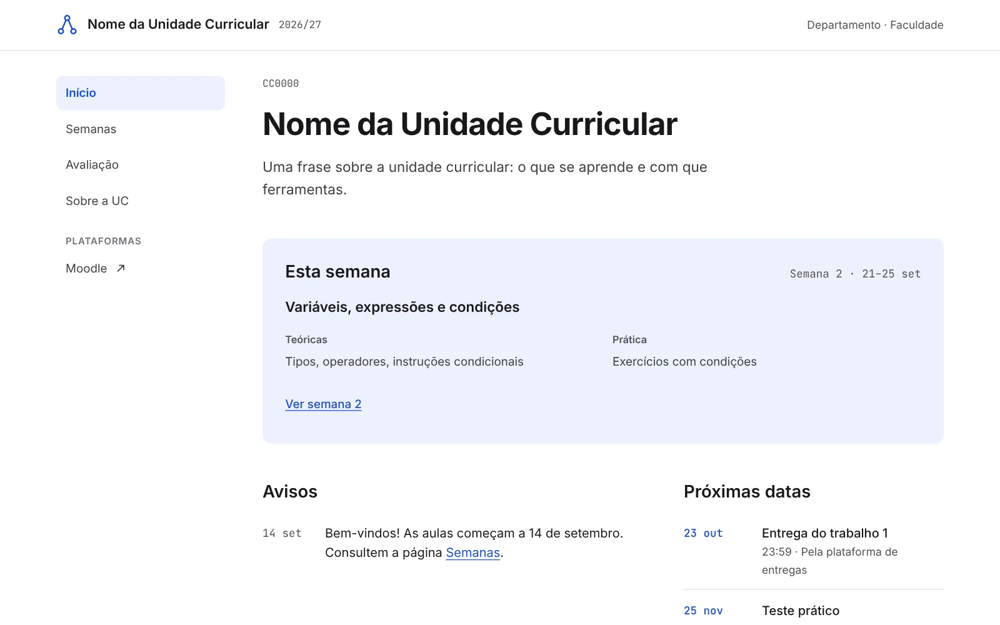

Começar
Criar o meu site
Do zero a um site publicado em seis passos, a partir do modelo. Cada passo mostra o que se escreve e o que se deve ver. Conta com 15 minutos para ter o esqueleto pronto; o resto é escrever o conteúdo da cadeira.
Antes de começar
Basta um editor de texto (VS Code, Sublime, vim…) e um browser. Não se instala nada: as páginas carregam o kit de https://uc-design-kit.miguelrocha.dev/kit/v1/, por isso é preciso Internet também quando se abre o site do disco.
1. Descarregar o modelo
O modelo é um site mínimo mas completo, com quatro páginas e comentários curtos a dizer o que mudar.
Descompacta-se e dá-se à pasta o nome do ano letivo. O mesmo modelo está no GitHub, para quem preferir copiar os ficheiros.
unzip uc-template.zip
mv uc-template 2627| Ficheiro | Para quê |
|---|---|
course.js | Configuração do curso: título, semestre, equipa, prazos, avisos. É o que muda todos os anos. |
index.html | Página inicial com <uc-hero>, <uc-this-week>, <uc-notices>, <uc-deadlines> e <uc-team>. |
semanas.html | Calendário com <uc-weeks> e três semanas de exemplo. |
avaliacao.html | Cartões, chamada e a tabela de datas das provas. |
sobre.html | Objetivos, programa, horário em tabela e equipa. |
theme.css | Estilos próprios, vazio com um exemplo comentado. |
README.txt | Estes passos, em resumo. |
AGENTS.md | As regras do kit para assistentes de programação (Claude Code, Codex). Ver O ficheiro AGENTS.md. |
2. Abrir no browser
Abre-se o index.html com duplo clique. O resultado deve ser este, com o nome de exemplo:

Aberto do disco (file://), o cartão "Esta semana" mostra as datas e os prazos mas não a matéria da semana: o browser não deixa uma página ler outra do disco (ver A página de semanas). Para ver tudo como no servidor, serve-se a pasta localmente:
cd 2627
python3 -m http.server 8000
# abrir http://localhost:8000/Se a página aparecer sem estilos, o kit não carregou: confirmar a ligação à Internet e os três endereços do <head> (ver Estrutura de um site).
3. Editar o course.js
Primeiro os dados da cadeira. Estes são os campos a mudar logo; os outros têm valores razoáveis e explicam-se em O ficheiro course.js.
window.UC_COURSE = {
code: "AP0001",
title: "Algoritmos e Programação",
tagline: "Um curso fictício usado nas demonstrações da documentação do UC Design Kit.",
edition: "2025/26",
institution: { name: "Universidade Exemplo" },
semester: {
start: "2025-09-15", // primeiro dia de aulas
weeks: 12,
breaks: [{ start: "2025-10-27", end: "2025-10-31", label: "Semana de estudo" }],
},
deadlines: [
{ id: "t2", title: "Entrega do trabalho 2", kind: "submission",
date: "2025-11-28", time: "23:59", note: "Pela plataforma de entregas" },
{ id: "teste", title: "Teste prático", kind: "assessment",
date: "2025-12-10", time: "14:00", note: "Laboratórios 1 e 2" },
{ id: "exame", title: "Exame, época normal", kind: "exam", date: "2026-01" },
],
};Guarda-se e recarrega-se a página. O título vem do course.js e os prazos aparecem por ordem, só os que ainda não passaram:
Se algo não aparecer, abrir a consola do browser (F12): o kit avisa, com mensagens começadas por [uc-kit], quando falta um campo ou uma data não é válida. Os erros mais comuns estão em Erros comuns.
4. Escrever a primeira semana
Em semanas.html cada semana é uma <uc-week> com o número e o título. As datas não se escrevem: calculam-se a partir de semester.start. Dentro, o HTML é livre; um <dl> aparece como linhas de etiqueta e valor.
<uc-week n="1" title="Apresentação e primeiros programas">
<dl>
<dt>Teóricas</dt>
<dd>Funcionamento da cadeira, avaliação · <a href="#">slides 1</a></dd>
<dt>Prática</dt>
<dd><a href="#">Guião 1: instalar as ferramentas</a></dd>
</dl>
<p>Tragam o portátil para a primeira aula prática.</p>
</uc-week>A demonstração está fixada em 17 de setembro de 2025, por isso a semana 1 é a atual e aparece aberta. Para ver o site noutro dia sem esperar por ele, acrescenta-se ?today=AAAA-MM-DD ao endereço, por exemplo semanas.html?today=2025-11-27. As outras páginas (avaliação, sobre) são HTML com os blocos do kit; o modelo traz exemplos de cartões, chamadas e tabelas.
5. Ver no browser
Antes de publicar, vale a pena percorrer o site com três verificações rápidas:
- Datas. Com
?today=num dia de cada mês do semestre, a semana certa abre e "Esta semana" mostra os prazos certos. - Telemóvel. No modo de dispositivo das ferramentas do browser (Ctrl+Shift+M), a navegação passa a um menu e as tabelas deslizam na horizontal.
- Consola. Sem avisos
[uc-kit].
6. Publicar
O site é uma pasta de ficheiros estáticos: publica-se copiando-a para um servidor web. No servidor do departamento é uma cópia para o ~/public_html:
scp -r 2627 utilizador@servidor:public_html/aulas/minha-uc/Os detalhes, o GitHub Pages e o Cloudflare Pages estão em Publicar.
Próximos passos
- Estrutura de um site: páginas em subpastas, o
<head>de cada página e os links. - O ficheiro course.js: todos os campos, com tipos e valores por omissão.
- Línguas: um site em português e inglês.
- Novo ano letivo: o que mudar quando se copia a pasta.